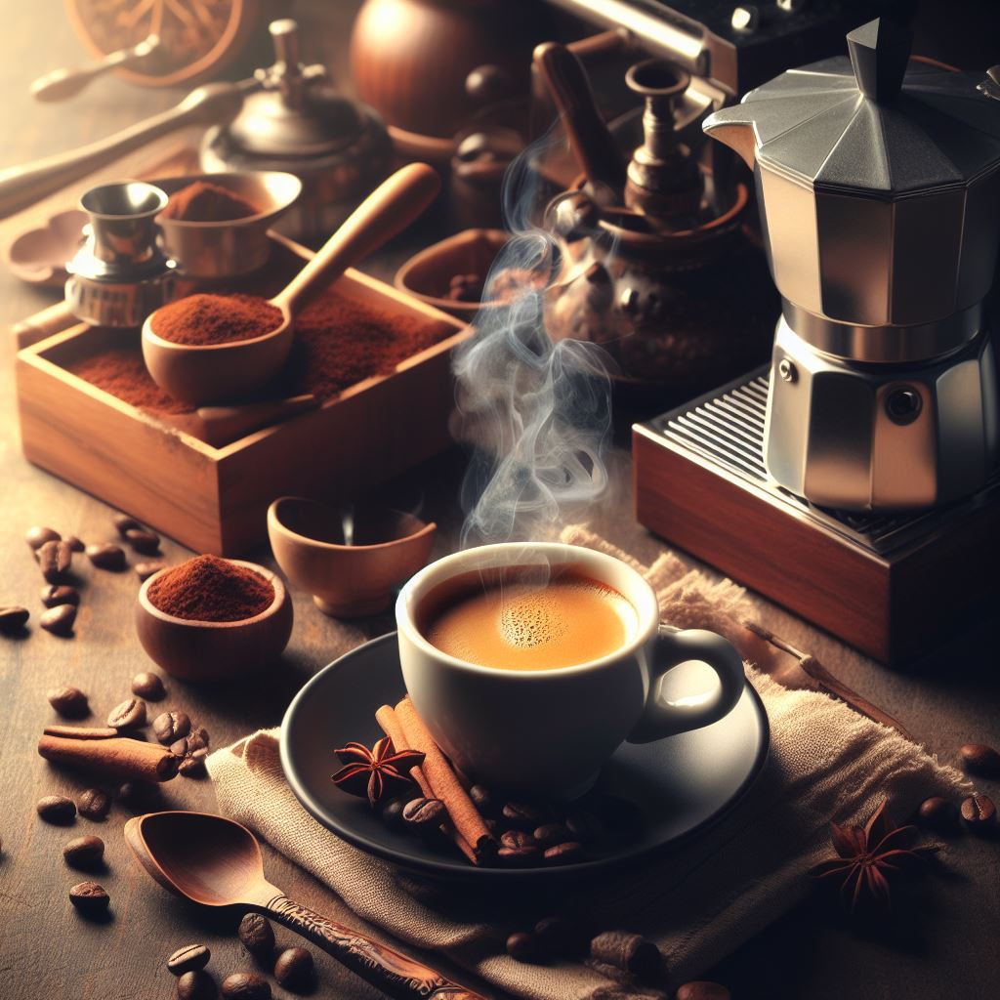
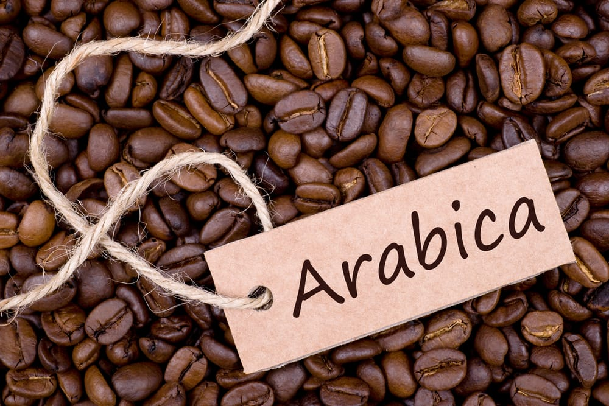
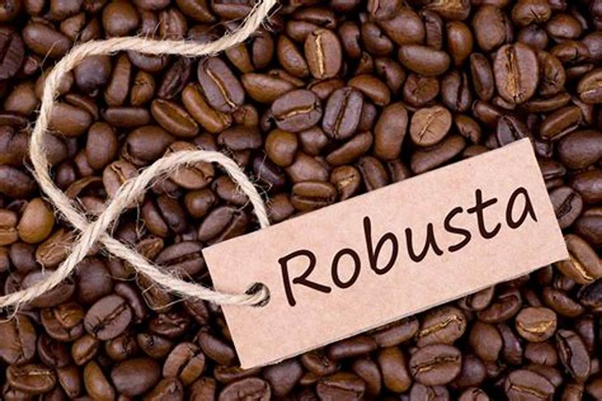
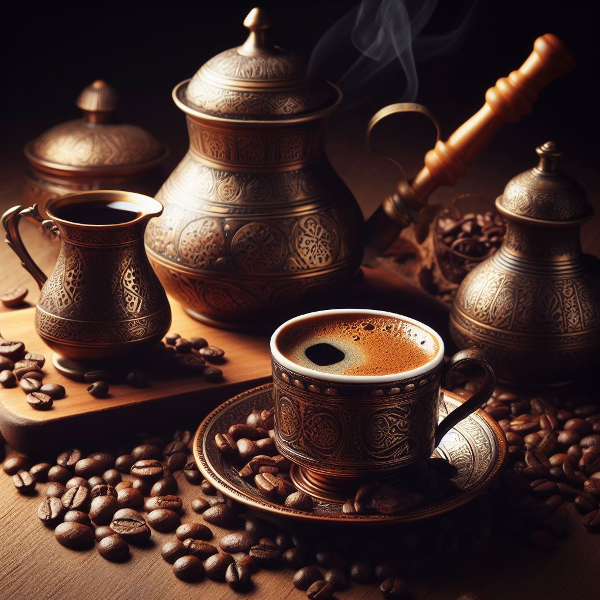
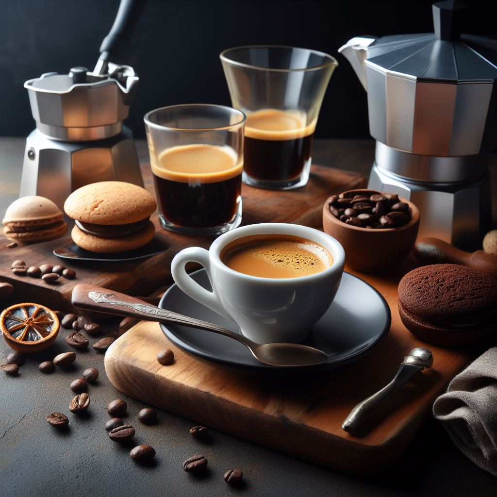
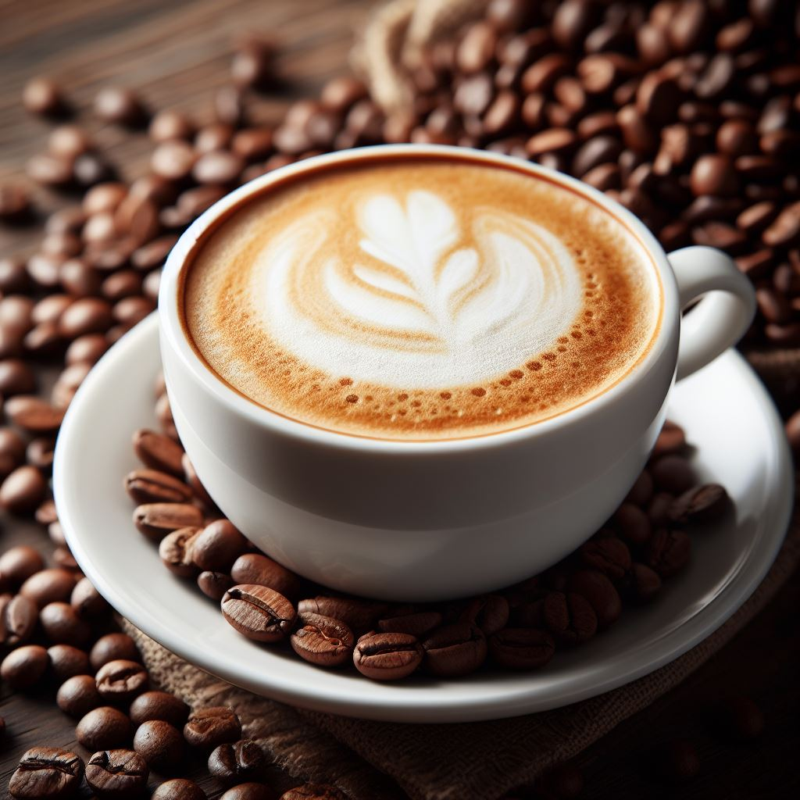

|  | Coffee is a popular beverage consumed by millions of people worldwide. |
|  | Arabica This is the most popular type of coffee bean, |
 |
Robusta beans are the second most popular type of coffee bean, |
Turkish Coffee Turkish coffee is very finely ground |
Espresso Espresso is a concentrated form of coffee |
Cappuccino Cappuccino is a coffee drink made from |
Coffee Lover |
|
To make a Turkish Coffee
|
To make Espresso Coffee
|
To make a cup of Cappuccino |
2023